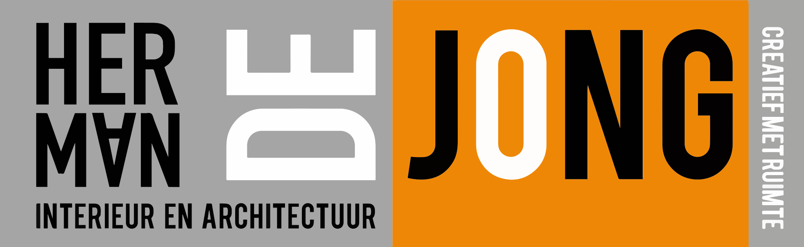

1 — Brand (kleurnaden)
viewBox 2560: 1250 · 1134,36 ·
176,34 — zoals productie.

Drie varianten naast elkaar. Logo-breedte demo: 290px (desktop header HWA 2026).
viewBox 2560: 1250 · 1134,36 ·
176,34 — zoals productie.

Drie kolommen van elk 33,333% — geen kleurlogica.
Zelfde kolombreedtes als brand, maar schuine clips + andere choreografie (midden van onder).